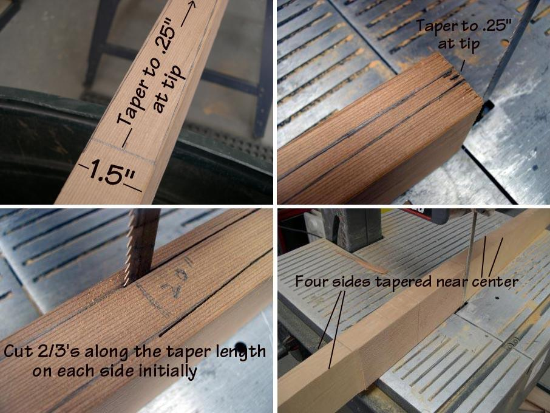

| Greenland Paddle Construction | Menu Last Page Next Page |
|
 Use a sharp, preferably new, blade to cut the tapers, as the blade will be passing through 3.5" cedar. Move slowly, never forcing the blade, and constantly correct any tendancy of the blade to wander. Small variations in the cut will be easily corrected during sanding. While cutting the tapers (4ea) along the 2 X 4, it is best to cut each taper approximately 2/3's of the way on each side to retain stability of the 2 X 4 on the band saw base. After cutting this way, complete the tapers on all four sides. The paddle shown above has been tapered to the 9" center of the loom. The other option is to taper to the 22.5" loom length. ( Review details of this in the drawings) Next, the loom and blade outlines will be drawn along the top side of the now tapered blank. |
|